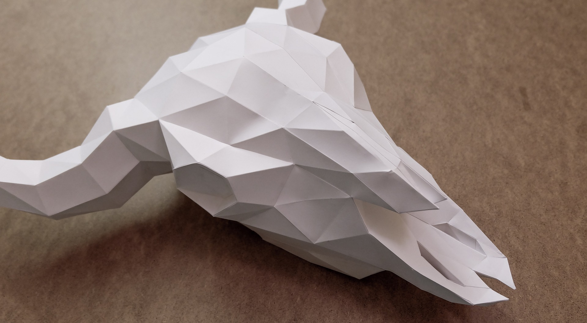

(This website will mainly be focusing on paper cutting art while mentioning some other types of paper art or related types of art.)
WELCOME TO THE PAPER ART UNIVERSE!
Paper art is the creation of art using paper designs. This type of art has developed across the world in different cultures each in their unique ways. A piece of paper may be cut to display an image directly; a piece of paper may be folded to form a 3D creation; a piece of paper may be folded and cut to represent an object; or a number of paper can be cut, folded, layered, or pasted together to form a diverse and unique piece of art.
Check out this article here for some EXAMPLES of paper cutting art (You can ignore the Chinese descriptions or use google translate extension)!
The art of paper cutting can be traced back to the Han Dynasty in the 4th century AD after the invention of paper. The clever peasant women folded and trimmed the leftover paper from paper windows and old books to create pinwheels, birds, flower baskets, and other children’s toys. Through these practices, the women developed skills that enabled them to make beautiful five-layer booklets (named 样本子 or 花本子) with 31 various paper shoes samples, sock samples, hat samples, and the like as a dowry for their daughter. As time moved on, these designs became more complex and varied, and paper cutting art remained a popular practice during the Song and Tang Dynasties.
Around the eighth and the ninth centuries, paper cutting art appeared in West Asia and, by the 16th century, in Turkey as well. It was in Turkey and the surrounding gulf regions where people replaced the usage of paper weed with livestock hides, potentially increasing the value of paper art. In the 13th century, paper making techniques finally reached Europe. As a result, European countries such as Switzerland and Germany did not establish any forms of paper cutting art until the 16th century. In the 18th century, a group of artists in Europe opened new doors to paper cutting art. This was when new forms of paper art appeared and breakthroughs occurred as artists sought new challenges and new methods.
In general, paper art is done using paper as the material, as the name indicates. Artists are required to be able to cut, trim, curl, fold, and glue with proficiency. Usually, all an artist needs would be a utility knife to shape the picture or take out the redundant sections and pieces of paper (although some forms of art may require more tools). In order to complete paper art, most people would choose to look up tutorials online or purchase paper art related books to begin with. With accumulated knowledge and experience, artists gradually developed the skills to make original creations just like any other types of art.
Many paper art artists also have the skills to draw and complete other forms of art. It is also very likely that they learned to use Photoshop and CAD. These techniques can come in handy when they are making the ‘blueprint’ for their paper art.
The process of doing paper cutting art follows the same process as general paper art. Various types of tools in addition to utility knives have been invented for convenience, but they are not required. Here is the general procedure of making paper art:
Step 1: Select an idea or ‘blueprint’ to make. If you choose 2-dimensional paper cutting art, make sure that the images are all connected at some parts so they are one piece in the end.
Step 2: Print out the blueprint or draw out the idea. For a cleaner finished product, you try to print or draw the art on a piece of scrap paper, while placing the desired paper underneath the scrap paper. Make sure the position would not shift or change while you carve (you can do so by paper clipping them together, stapling them together, tapping them together, etc.). This way, when you finish the carving process, you can separate these two pieces of paper so that the finalized creation does not have any ink or marks on it (trying to erase the print may lead to the ripping of the delicate paper).
Step 3: Use the utility knife to carve out the shapes.
Step 4: Finalize your creation! In some instances of paper art, you may need to piece the different sections that you have carved out together to form one 3-dimensional creation; or you may need to fold them so they bend a certain way to form the desired product, like you would in pop-up cards.
Step 5: Package the delicate paper art! You may package the delicate art piece using photo frames, plastic, etc.
You have now reached the end of this page. Would you like to jump to the top?